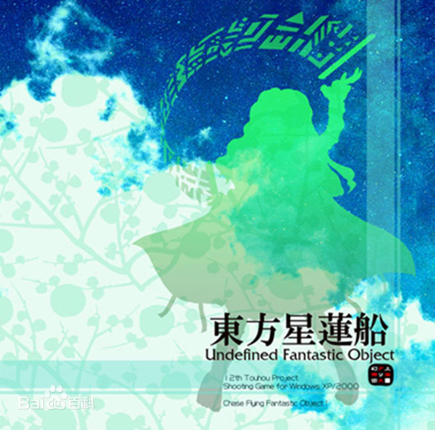

作品介绍
返回上一层
东方永夜抄
《东方永夜抄 ～ Imperishable Night.》
贩售日期：2004年8月15日
游戏平台：Windows 98/SE/ME/2000/XP
类别：弹幕射击游戏
幻想乡失去了满月。悬在夜空中的满月只是不知谁制造的假货而已。
对于需要借助月之魔力的妖怪来说，这是个严重的问题。
妖怪与人类延长了夜晚，在白天之前寻找真凶，取回真正的满月。
东方Project第8作。
面对极具威胁的对手，妖怪与人类协力作战的作品。
从该作品之后，东方Project中人类对妖怪的构图变得更复杂了。
东方风神录
《东方风神录 ～ Mountain of Faith.》
发售日期：2007年8月18日
游戏平台：Windows 7/8/10
类别：弹幕射击游戏
博丽神社的人类参拜客越来越少令人头疼。
信仰心不足让神社的存在动摇已经是个问题。更大的危机又造访了博丽神社。
山上突然出现了新的神社。这座神社给博丽神社带来了威胁。
东方Project第10作。
守矢神社初登场的作品。该作之后，以解决异变以外的理由展开的故事多了起来。
东方永夜抄

《东方星莲船 ～ Undefined Fantastic Object.》
发售日期：2009年8月15日
游戏平台：Windows 7/8/10
类别：弹幕射击游戏
那是什么！？鸟吗？宝船吗？那是UFO！
幻想乡空中，优雅漂浮的宝船与无数飞碟型的UFO相互交错。
灵梦她们为了得到宝物……不对，为了调查（不过果然还是想要啊）追逐着空中飞翔的宝船。
东方Project第12作。
幻想乡中的寺庙，命莲寺登场的作品。
在之后的作品中，作为佛教的代表，成为了灵梦和早苗的宗教竞争对手